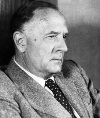

Büyük egosu ile tanınan bilim adamı Edwin Hubble (1889–1953) arkadaşları tarafından genellikle pek sevilmezdi. Ancak onun buluşları ve inkar edilemez dehası uzaya ilişkin algımızı bütünüyle değiştirmiştir. Evrenin tahmin edilenden çok daha büyük olduğunu ve çok büyük bir hızla genişlediğini ortaya koymuştur.

Gerçekten de Hubble’ın çalışmaları büyük patlama teorisine giden yolu açmıştır. Bu teori günümüzde evrenin başlangıcına ilişkin en yaygın kabul edilen teoridir. Büyük patlama teorisinin etkileri popüler kültürde bile hissedilmektedir. Çok uzaklarda ve çok uzun zaman önce bile galaksilerin var olduğunu kanıtlayan Hubble olmuştur.
Hubble Missouri’de doğmuştu. Lisede eyalet şampiyonu olan başarılı bir atletti. 1910 yılında Chicago Üniversitesi’nden mezun oldu. I. Dünya Savaşı yıllarında kısa bir süre için ABD ordusunda görev yaptıktan sonra Los Angeles yakınlarındaki Mount Wilson Gözlemevi’nde çalışmaya başladı. Burası dünyanın o zamanki en büyük teleskobuna ev sahipliği yapıyordu. Onun sayesinde Hubble gizemli gök cisimleri olan nebulaları gözleme fırsatı buldu.
1919 yılında pek çok astronom ve fizikçi samanyolunun evrendeki yegane galaksi olduğunu düşünüyordu. Nebulalarsa samanyolundaki gaz bulutlarıydı. Hubble nebulaların gerçekte bizden milyonlarca ışık yılı uzaklıktaki galaksiler olduğunu ortaya koydu. Galaksi ışıklarının kızıla kaymasını ölçerek onların büyük bir hızla bizden uzaklaştığını kanıtladı. Bu, evrenin artan bir hızla genişlediğini de gösteriyordu.
Galaksimizin ötesindeki evrenin keşfi Hubble’a büyük ün sağladı. Charlie Chaplin (1889–1977) gibi Holywood starları ile aynı muameleyi görüyordu. Time Dergisi’ne kapak oldu. Kendi teorisini yanlış çıkarmasına rağmen Albert Einstein (1879–1955) bile Hubble’ı takdir etti. (Einstein daha sonra ilk dönemler savunduğu statik evren modeli için “Hayatımın en büyük falsosu,” diyecekti.)
Hubble, II. Dünya Savaşı sırasında yeniden orduda görev aldı. Maryland’de bazuka ve benzeri silahlar geliştiren bir birim oluşturdu. Savaştan sonra sağlığı bozuldu. Altmış üç yaşında öldü.
Ek Bilgiler
1- Hubble Chicago’da öğrenciyken bir destekçisi tarafından dünya ağır siklet boks şampiyonu Jack Johnson (1878–1946) ile boks yapmaya davet edildi. Hubble bu öneriyi kibarca reddetti.
2- Kaliforniya, San Marino’daki evi 1976 yılında “Ulusal Tarih Alanı” ilan edildi.
3- Hubble Uzay Teleskobu adını ondan aldı. Uydu, 1990 yılında NASA tarafından uzaya gönderilmişti. Evrenin çekilmiş en detaylı renkli resimlerini gönderdi. 2013 yılında görevinin tamamlanacağı tahmin edilmektedir.